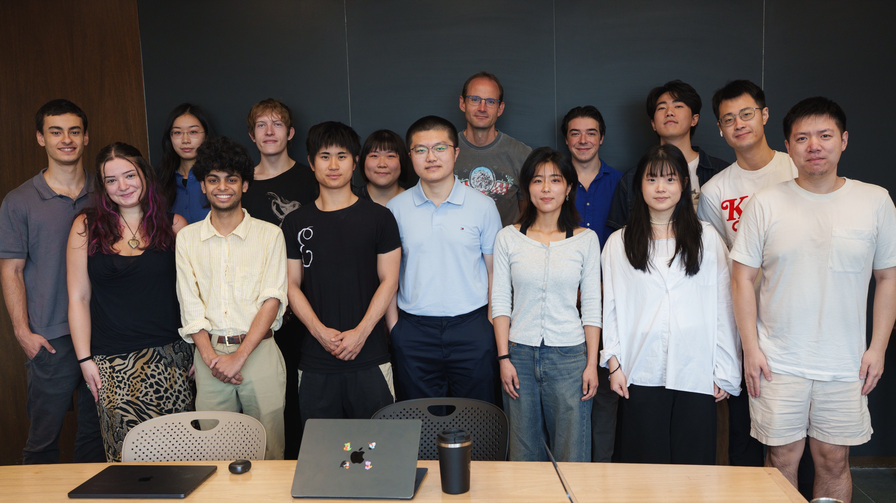
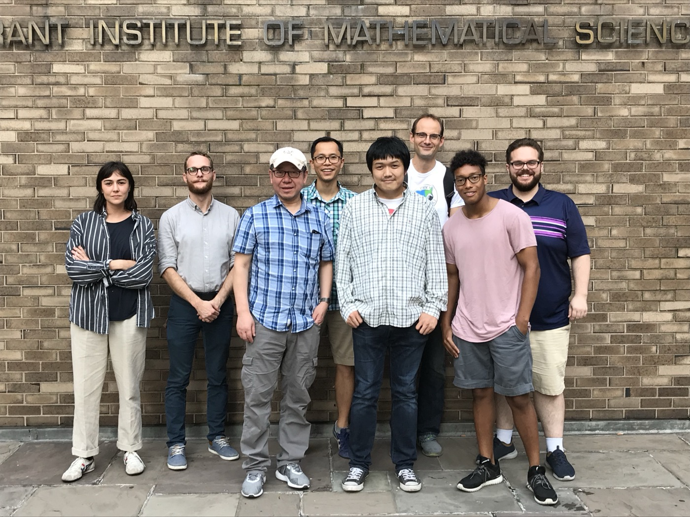
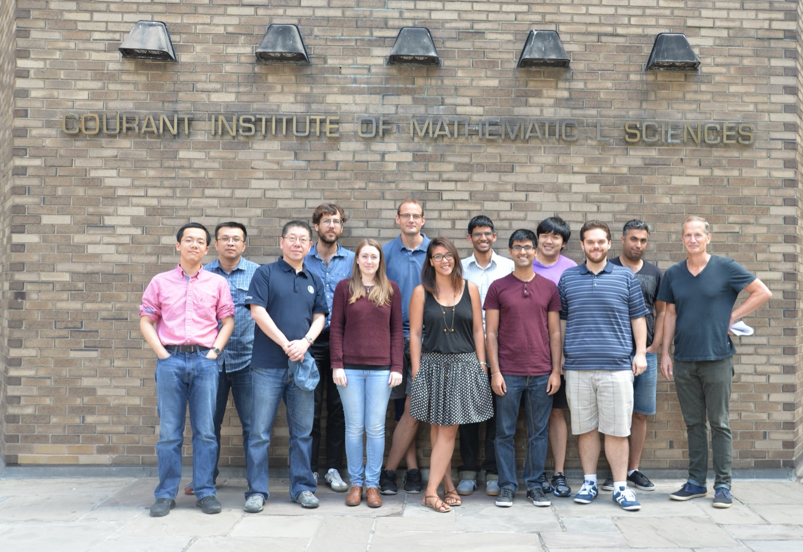
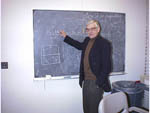
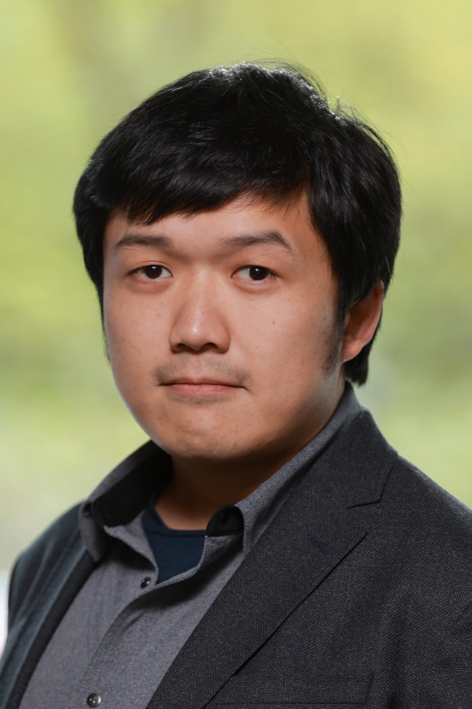

People

Members of the AML, 2026

Some members of the AML on the way to celebrate Mac’s PhD defense, Summer 2018:
Left to right: former RA Natalie Agre, Quentin Brosseau, Jun Zhang, Quynh M. Nguyen, Jinzi (Mac) Huang, Leif Ristroph, Joshua Tong, Joel W. Newbolt

Members of the AML, Summer 2015:
Left to right: Jiajun Tong, Yanpeng Liu, Jun Zhang, Sebastian Fürthauer, Megan Davies Wykes, Leif Ristroph, Sophie Ramananarivo, Likhit Ganedi, Anand Oza, Jinzi (Mac) Huang, Joel Newbolt, Ehssan Nazockdast, Michael Shelley
Associated Faculty
Michael J. Shelley, Professor of Mathematics, Courant Institute
Co-director of the AML
Jun Zhang, Professor of Physics and Mathematics
Co-director of the AML

Steven Childress, Professor Emiritus of Mathematics, Courant Institute
Co-founder of the AML
Charles S. Peskin, Professor of Mathematics, Courant Institute
Leif Ristroph, Associate Professor of Mathematics, Courant Institute

Jinzi Mac Huang, Assistant Professor of Mathematics, NYU Shanghai
Associated Postdocs
Guanhua Sun
Associated PhD Students
Alison Kim
Gabriel Abreu
Ron Shvartsman
Tiffany (Huilin) Li
Associated Masters Students
Aria Huang
Junhao Yin
Maggie Wolf
Robin Wang
Associated Undergraduate Students
Arkin Rao
Jonas Ranft
Kevin Xie
Sean Xia
Shoshana Perlova
Siya Xu
|
|
Alumnae | ||
|
Former Faculty |
|||
| Anna-Karin Tornberg, Professor of Numerical Analysis, KTH, Stockholm, Sweden | |||
|
Former Postdocs |
|||
| Christiana Mavroyiakoumou | |||
| Samuel Boury, CNRS postdoctoral researcher at Université Paris-Saclay. | |||
| Pejman Sanaei, Assistant Professor,Department of Mathematics, New York Institute of Technology | |||
| Quentin Brosseau, Post-Doctoral Fellow | |||
| Anand Oza, Assistant Professor, Department of Mathematical Sciences,New Jersey Institute of Technology (NJIT) | |||
| Sebastian Fürthauer, Post-Doctoral Fellow | |||
| Ehssan Nazockdast, Post-Doctoral Fellow | |||
| Megan Davies Wykes, Fulbright Scholar | |||
| Sophie Ramananarivo, Post-Doctoral Fellow, Department of Physics, University of California, San Diego |
|||
| Hassan Masoud, Faculty, Department of Mechanical Engineering, University of Nevada, Reno | |||
| Tong (Tony) Gao, Faculty, Computational Mathematics, Science and Engineering, Michigan State University | |||
| Trush Majmudar, Clinical Faculty, Courant Institute of Mathematical Sciences, New York University |
|||
| David Ambrose, Faculty, Department of Mathematics, Drexel University, Philadelphia |
|||
| Leif Becker |
|||
| Meredith D. Betterton, Faculty, Physics Department, University of Colorado, Boulder |
|||
| Christal Hohenegger, Faculty, Department of Mathematics, University of Utah, Salt Lake City |
|||
| Anette (Peko) Hosoi, Faculty, Department of Mechanical Engineering, MIT, Cambridge, Mass. |
|||
| David Hu, Faculty, Department of Mechanical Engineering, Georgia Institute of Technology, Atlanta |
|||
| Marvin Jones, RCUK Academic Fellowship, School of Mathematics, Life Sciences Interface , University of Southampton, Southampton, UK |
|||
| Sunghwan (Sunny) Jung, Faculty, Engineering Science and Mechanics, Virginia Tech, Blacksburg, Virginia |
|||
| Alex Kanevsky, Researcher, ExxonMobil, New Jersey, USA |
|||
| Eric Keaveny, Faculty, Natural Sciences, Department of Mathematics, Imperial College, London |
|||
| Bin Liu, Post-Doctoral Fellow, Division of Engineering, Brown University, Providence, RI |
|||
| Matthew “Nick” Moore, Faculty, Mathematics Department, Florida State University, Tallahassee, Florida |
|||
| Lionel Moret |
|||
| Lionel Rosellini, Inventor, Engineer, Paris, France |
|||
| David Saintillan, Faculty, Department of Mechanical and Aerospace Engineering, University of California San Diego |
|||
| Tamar Shinar, Faculty, Computer Science and Engineering Department, University of California, Riverside |
|||
| Daisuke Takagi, Faculty, Department of Mathematics, University of Hawai’i at Manoa |
|||
| Joseph Teran, Faculty, Mathematics Department, University of California, Los Angeles |
|||
| Becca Thomases, Faculty, Mathematics Department, University of California, Davis | |||
| Nicolas Vandenberghe, Permanent Faculty, Aix-Marseille Université, France | |||
| Shawn Walker, Faculty, Department of Mathematics and Center for Computation and Technology, Louisiana State University | |||
| Z. Jane Wang, Faculty, Theoretical and Applied Mechanics, and Physics, Cornell University, Ithaca |
|||
| Chris Wiggins, Faculty, Department of Applied Physics and Applied Mathematics, Columbia University, New York |
|||
| Jon Wilkening, Faculty, Department of Mathematics, University of California, Berkeley | |||
|
Former Graduate Students |
|||
| Bobae Johnson | |||
| Jesse Smith | |||
| Kitty Li | |||
| Scott Weady. Research Fellow in the Flatiron Institute’s Center for Computational Biology. | |||
| Quynh M. Nguyen (Physics PhD, 2020). Research Assistant in Data Science and Adjunct Instructor, Physics Department, New York University. Research Fellow, Department of Nuclear Engineering and Radiological Sciences University of Michigan. website, resume. | |||
| Joel W. Newbolt (Physics PhD 2019), Post-Doctoral Fellow, Harvard University | |||
| Fang Fang | |||
| Jinzi (Mac) Huang (Math PhD 2018), Assistant Professor, Department of Mathematics, New York University Shanghai | |||
| Silas Alben, Faculty, Department of Mathematics, University of Michigan, Ann Arbor, Michigan | |||
| Thomas Bringley | |||
| Petri Fast, Applied Mathematician |
|||
| Eunok Jung, Faculty, Department of Mathematics, Konkuk University, Seoul, South Korea | |||
| Shilpa Khatri, Postdoctoral Fellow Joint Fluids Lab, University of North Carolina at Chapel Hill | |||
| Yongsam Kim, Faculty, Department of Mathematics, Chung-Ang University, Seoul, South Korea | |||
| Sookkyung Lim, Faculty, Department of Mathematical Sciences, University of Cincinnati, Cincinnati, Ohio |
|||
| Enkeleida Lushi, Postdoctoral Fellow, Division Engineering, Brown University, Providence, RI and Visiting Scholar, Courant Institute, NY |
|||
| Laura Miller, Faculty, Mathematics Department, University of North Carolina, Chapel Hill, North Carolina | |||
| Ignacio Rodrigues-Brenes, Post-Doctoral Fellow, Mathematics Department, University of California, Irvine, California | |||
| Adam Stinchcombe, Post-Doctoral Fellow, Department of Mathematics, University of Michigan, Ann Arbor, Michigan NYU webpage | |||
| Saverio Spagnolie, Faculty, Department of Applied Math and Department of Mathematics, University of Wisconsin, Madison, Wisconsin | |||
| Jinguo Zhao, Finance |
|||
| Jin-Qiang Zhong, Faculty, Department of Physics, Tong-Ji University, Shanghai |
|||
| Luoding Zhu, Faculty, Department of Mathematical Sciences, Indiana University-Purdue University, Indianapolis, Indiana. |
|||
|
Former Interns |
|||
| Khunsa Amin | |||
| Gonzague de la Hautiere Engineering Master’s Student, Ecole Polytechnique, France |
|||
| Leif Ristroph Graduate Student, Department of Physics, Cornell University, Ithaca, N.Y. |
|||
| Teis Schnipper Graduate Student, Dept. of Physics and Center for Fluid Dynamics, Technical University of Denmark, Lyngby, Denmark |
|||
| Benjamin Thiria Graduate Student, Ecole Polytechnique, France Studied Vibratory Pumping Co-author on Publication: Paper1 |
|||
Former Undergraduate Students |
|||
| Ailsa Craigmile | |||
| Kelly Yu | |||
| Ahmed M. Sherif – Physics Major | |||
| Joanna Abouezzi – Mathematics Major | |||
| Joshua Tong – Mathematics and Physics Major | |||
| Nick Lewis – Mathematics Major | |||
| Kevin Hu – Physics Major | |||
| Dean Huang – Physics Major | |||
| Natalie Agre – Mathematics and Physics Major | |||
| Likhit Ganedi – Mathematics, Physics, and Computer Science Major | |||
| Tommy Mitchel – Mathematics Major | |||
| Alex Becker NYU Mathematics Major |
|||
| Clifford Chang NYU Chemistry Major |
|||
| Adam Cone NYU math major |
|||
| Noah Brenowitz NYU physics major |
|||
| Brendan Folie Harvey Mudd College math major |
|||
| Henry Jacobs NYU math major |
|||
| Erica Kim NYU math major |
|||
| Kathleen Mareck NYU math major |
|||
| Jasmine Nirody NYU math and biology major |
|||
| Karishma Parikh NYU math major |
|||
| Julien Psaute Ecole Polytechnique, Paris |
|||
| Cayla Wallwork NYU math major |
|||
| Annie Weathers NYU physics major |
|||
|
Former High School Students |
|||
| Vievie Romanelli | |||
| Charlotte Meyer | |||
| Evan Zauderer | |||
| Jonathan Kamler | |||
| Michael Levine | |||
| Tran Nguygen Bronx High School of Science |
|||
| William Shinevar Dwight-Englewood High School |
|||
| Matthew Xia Stuyvesant High School |
|||
| Theodore Katz Dalton High School |
|||